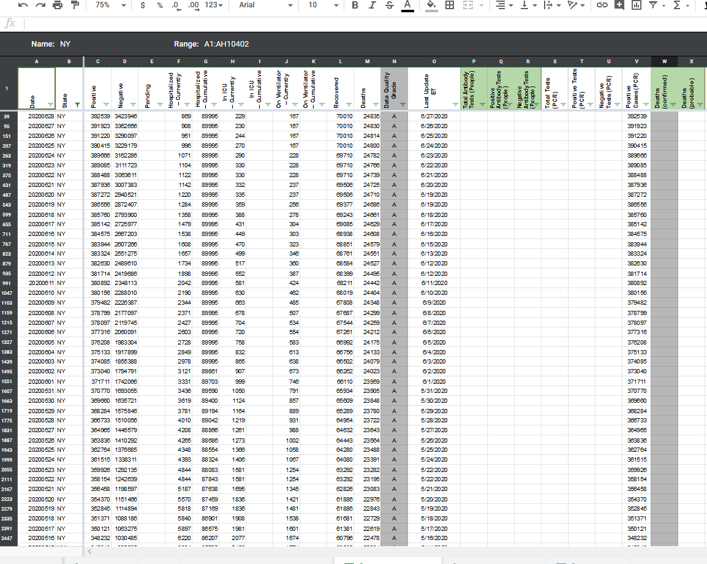
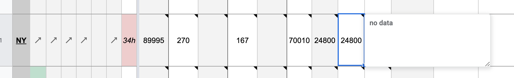

[NY] PCL Historicals and WS2
Death values are historically recorded in both the “Deaths” and “Deaths (Confirmed)” columns for NY. However, NY’s death values are unclear about what they represent, so they should only be recorded in the main “Deaths” field.
pscsharon added the label Data quality on June 26, 2020 at 7:20 am
pscsharon added the label PCL/SVP Historicals on June 26, 2020 at 7:28 am
pscsharon removed the label PCL/SVP Historicals on June 26, 2020 at 7:29 am
pscsharon added the label Historical Data on June 26, 2020 at 7:29 am
pscsharon removed the label Historical Data on June 26, 2020 at 7:30 am
pscsharon added the label PCL/SVP Historicals on June 26, 2020 at 7:30 am
pscsharon removed the label Data quality on June 26, 2020 at 7:31 am
muamichali commented on June 28, 2020 at 5:00 pm
States Daily
BEFORE

AFTER 
muamichali closed the issue on June 28, 2020 at 5:00 pm
karaschechtman commented on June 30, 2020 at 8:08 am
DC’d by SNW
Updated tooltip and added process note.
